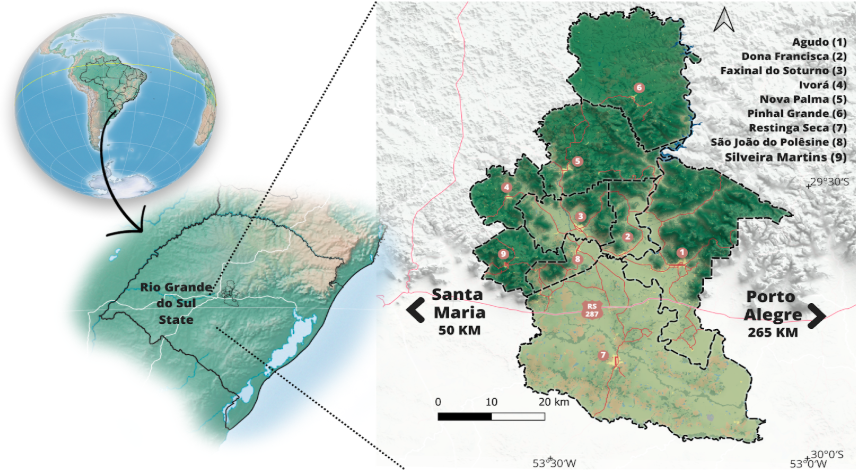
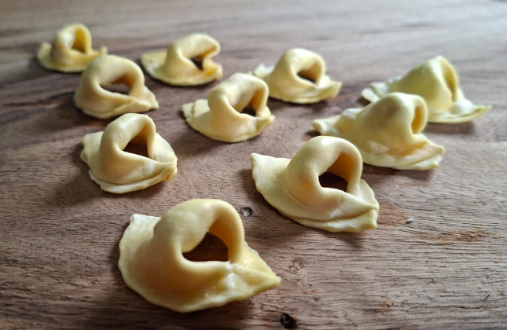
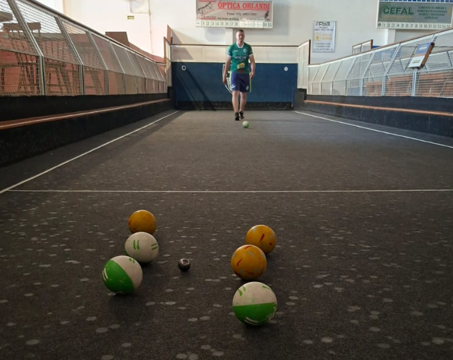
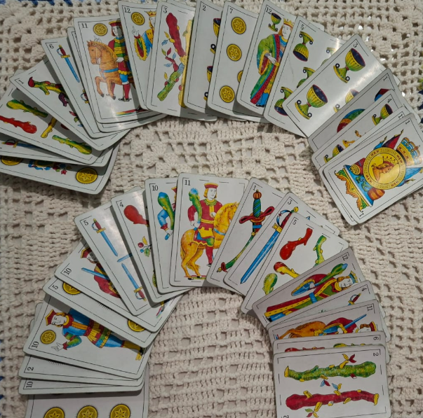
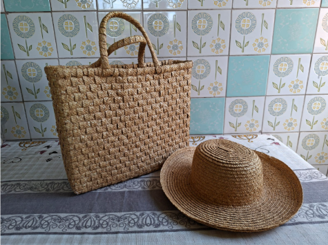
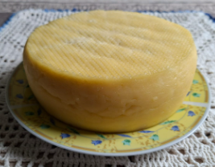
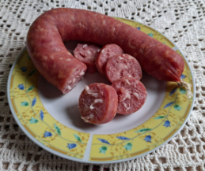
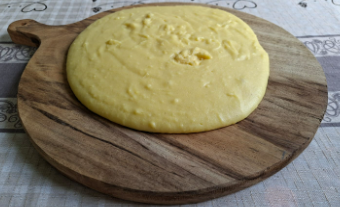
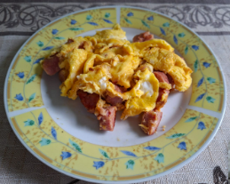

Patrimônio em jogo: Desvendando Faxinal do Soturno/RS
Fonte das Imagens e das questões: Fabiane Lenz Cassol
Desenvolvido por: Gustavo Tanscheit
1. Que território o mapa em destaque representa?

2. “A Quarta Colônia é formada por ______ municípios e encontra-se na região ________ do estado do Rio Grande do Sul”.
3. Para um território considerado “geoparque”, é preciso a garantia de:
4. Instituições que trabalharam para que a região da Quarta Colônia se tornasse um geoparque:
5. A região da Quarta Colônia tornou-se um geoparque no ano de:
6. O Quarta Colônia Geoparque Mundial UNESCO apresenta:
7. O que significa patrimônio cultural?
8. Quais são os principais povos que auxiliaram na formação do patrimônio cultural da Quarta Colônia e, consequentemente, de Faxinal do Soturno?
9. A partir de que ano iniciou a chegada dos primeiros imigrantes italianos na região?
10. Assinale a alternativa que completa corretamente a frase:
“Inicialmente, Faxinal do Soturno chamava-se ______________ e, em seguida, ____________, em virtude do encontro de vestígios ____________.”
11. ‘Geringonça’ foi o primeiro local onde os imigrantes italianos se instalaram. Hoje, esta localidade chama-se:
12. Elementos que auxiliaram os imigrantes italianos a superarem as adversidades em terras desconhecidas:
13. Quem são considerados os pioneiros na fundação de Faxinal do Soturno?
14. Como se chama o rio que cruza o território municipal, do qual originou seu nome oficial:
15. Qual é a data de emancipação de Faxinal do Soturno?
16. A palavra ‘Soturno’, presente no nome do município, significa “lugar…:
17. Faxinal do Soturno emancipou-se do município de:
18. Os municípios a seguir são alguns exemplos de cidades que limitam-se com Faxinal do Soturno, exceto:
19. Os símbolos oficiais do município são:
20. Quais são as culturas agrícolas presentes no Brasão de Armas Municipal?
21. Quais são as cores presentes na Bandeira Municipal?
22. O Hino Municipal, em sua composição, exalta:
23. Como se chama o padroeiro de Faxinal do Soturno, considerado protetor das doenças, dos cirurgiões e dos cães, cujas homenagens são realizadas anualmente em 16 de agosto?
24. Todas as alternativas a seguir apresentam o nome de localidades da zona rural de Faxinal do Soturno, exceto:
25. Qual é o prato típico regional à base de arroz:
26. Como chama-se o alimento que tem como base a fermentação natural, coberto por uma farofa doce:
27. Que expressão é utilizada para se referir à “avó” e “avô”, em italiano:
28. Observe a imagem a seguir e assinale a opção que contenha o nome correto deste alimento tradicional da culinária italiana, muito apreciado em sopas:

29. Qual das bebidas a seguir é produzida a partir da fermentação da uva?
30. Marque a frase em que a palavra destacada é uma expressão típica da região da Quarta Colônia:
31. As imagens a seguir representam alguns dos jogos que fazem parte dos momentos de lazer. Marque a opção que apresenta o nome desses jogos, respectivamente:


32. Analise a imagem e assinale que técnica foi utilizada para a confecção de tais objetos:

33. As imagens abaixo representam pratos típicos regionais. Marque a opção em que há a matéria-prima destes pratos, respectivamente.




34. Em terras faxinalenses há a presença de:
35. Assinale a opção que preencha corretamente as lacunas do trecho abaixo:
“As ________________ são eventos realizados anualmente pelas localidades do interior, tendo como principal objetivo _________ seu padroeiro. Nessas festas, há a realização de _________, seguida de almoço com ______________ da gastronomia local e _____________ à tarde. São momentos especiais, onde ____________ de várias gerações se reúnem em torno da ____________ e da ______________”.